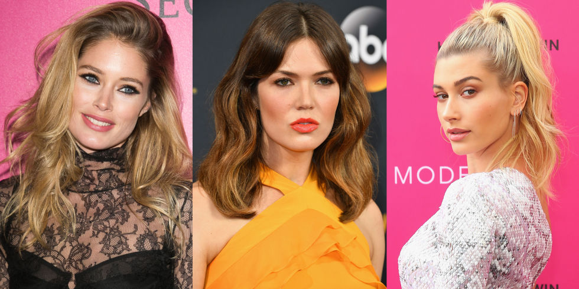

8 HAIR TRENDS YOU'LL SEE EVERYWHERE IN 2017
The trending styles,cuts and colors that will define the new year.
We're calling it now: these eight hair trends are going to be huge in 2017.
- Flat Waves
- The High Pony
- The Super Sleek
- The Growing out shag
- Cher Hair
- The Hair Flip
- Slick and Shiny
- Golden Bronde
Neither beachy nor bouncy, flat iron waves are the new curling iron waves. As seen here on Kendall Jenner, waves created with a straightener are more subtle and a little less glam. Just create a bend in your hair by pushing it upward, then seal the shape with a few clamps of your iron. Release and repeat. Keep your ends straight for the most polished finish.
Slick your hair up. All the way up. Done in rumpled texture or stick-straight, the high ponytail adds both an elegance and ease to every ensemble. Bonus: the tighter you secure it, the more lifted your face looks (but maybe pop an Advil or two first).
Break out your flat iron—straight, shiny, and center-parted hair is one of the biggest trends for 2017. But this style only works if your hair looks healthy—not fried. Be sure to mist a heat protectant through your hair before touching it with a straightener.
The shag was the surprising hit haircut in 2016. But those layers and bangs have to grow out sometime. In 2017, we'll see the beautiful result of that. With hair that hits just past the shoulders and bangs that are long enough to be split down the middle, the grown-out shag is the haircut to keep an eye on this year. If anything, it's a way to hint at a shag without giving it your full commitment.
Ultra-long extensions aren't going anywhere. We've seen them on Rihanna, Jourdan Dunn, and the Kardashians in recent months, and the trend is poised to make an even bigger splash come January.
The easiest hairstyle trend to copy this year? The hair flip. All it requires is you to flip your hair from one side to the other, creating tons of volume as a result.
Shay Mitchell did it. So did Gigi Hadid and Kim Kardashian. And it was all over spring 2017 fashion week. Slick, shiny hair that only looks like its sopping wet is a 2017 hair trend that can look just as good off the runway and IRL. Just work a heavy dose of styling cream from your roots to mid-lengths to get that unmistakable shine with a little bit of hold.
In some lighting it's blonde. In others it's golden brown. This transformative hair color trend is called golden bronde—and it's the perfect warm-toned hair color that can be adjusted to work on all skin tones. So if you've never considered going blonde before, maybe this is your year.